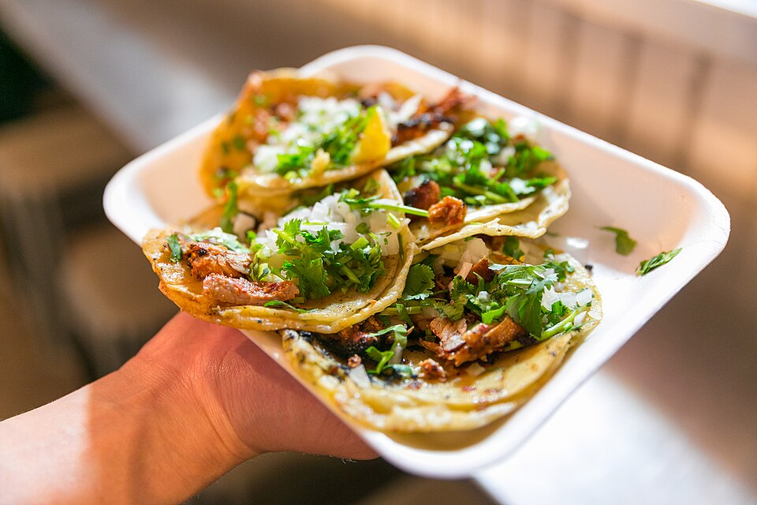

|
Tacos al pastor caseros
Receta de cocina mexicana |
|||||||||||||||||||
|
 Foto: City Foodsters, Wikimedia Commons (CC BY 2.0) |
Ficha técnica
|
||||||||||||||||||
Ingredientes
|
Procedimiento
|
||||||||||||||||||
| Sirve con limón y salsa. ¡Provecho! | |||||||||||||||||||